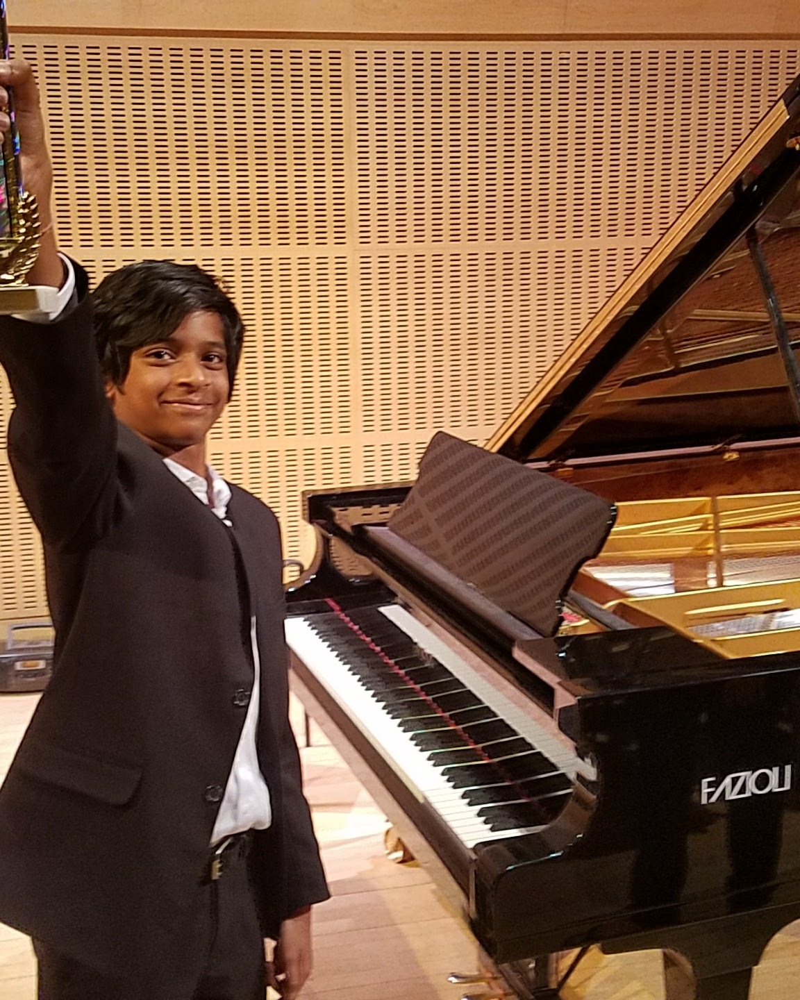
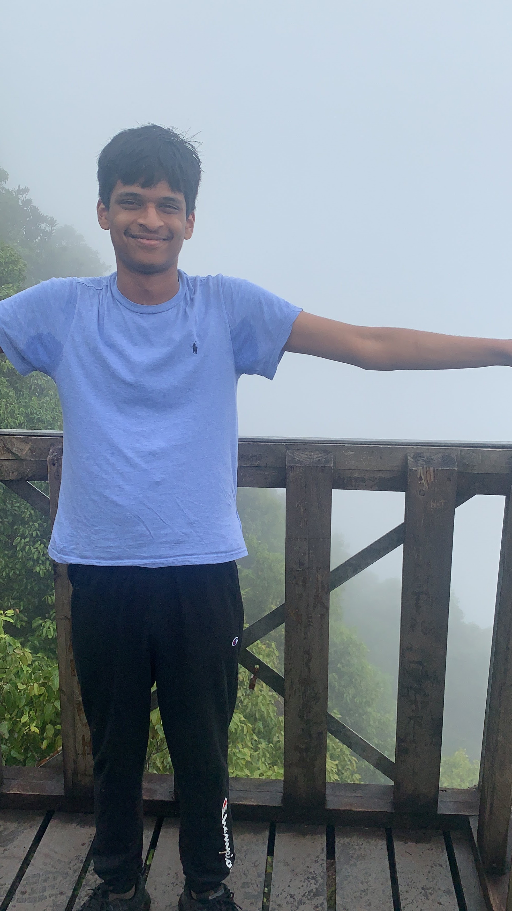

P.S. In my off-time, I love to sing, and go hiking.
When I say I love to sing, I mean it.
I have been singing since I was 6 years old, when I also picked up the piano.
I’ve had over 40 musical performances across the schools I’ve studied at, musical competitions, auditions, and concerts. I’ve performed classical and pop, and I’ve also been part of a musical theatre summer program.

I went to Special Music School in New York and studied voice for six years at Third Street Music School, performing regularly along the way. In 2023, I was selected as a New York Community Trust Harris Scholar through Third Street, based on my academic record and musical merits. The four-year scholarship supports continuing music study alongside college.

When I’m not building—or singing.
I also love to hike with my family and friends. We’ve gone hiking in the Seychelles, the Pocono Mountains in the US, as well as Eagle Eye Reserve with my friends in Newark.
